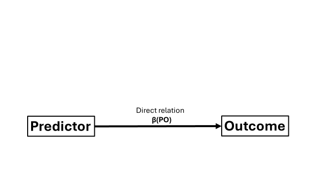
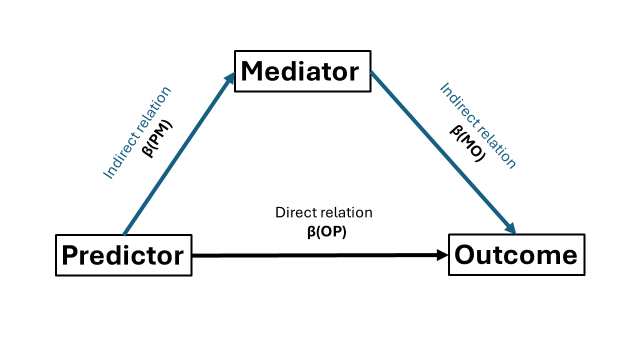
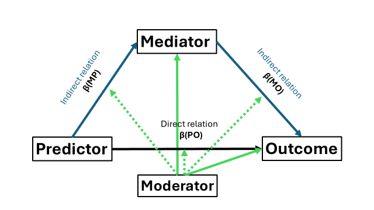

8 Structural Equation Modelling and mediation
Structural Equation Modelling (SEM) can be used to test hypotheses about relations between latent and observed (or at least measured in some way) variables. We have already seen SEM in action when discussing confirmatory factor analysis but now I want to end this guide briefly talking about mediation. In this part I will discuss
- The basic mediation using the lavaan package
- How to visualize results from a mediation using the semPlot package
- The moderated mediation with categorical and continuous moderators.
8.1 Basic mediation
Have you heard about those spurious correlations that arise when you correlate everything with everything? A classic textbook example is the positive correlation between ice cream consumption and drowning. Of course, correlation is not causation. So what we have here is a typical “direct” relation between outcome and predictor, which can be represented by a correlation coefficient or a regression coefficient. 
But why does ice cream consumption (predictor) relates to drowning (outcome)? We could reason that this relation was likely brought by other indirect relations. Ice cream consumption could be related to another variable, the mediator, and this mediator could relate to drowning. Through these “indirect pathways”, ice cream consumption may appear to be associated with drowning. The common explanation is that you tend to eat more ice cream when it is hot. Hot weather can increase susceptibiliy to heatstroke symptoms (the mediator). If you experience heatstroke symptoms when you go for a swim… unfortunate outcomes may occur
Mediation analysis allows us to test to what extent a (direct) relation between variables can be explained by the (indirect) relations with other variables. Do not to confuse mediation with moderation, which examines whether the strength of an association depends on other variables. When you learn about mediation, you typically encounter “the triangle” (or trapezium, whatever you prefer): 
Have you noticed that I talk a lot about the “direct” and “indirect” relations? The direct relation (henceforth referred to as direct effect) is the relation between predictor(s) and outcome after adjusting for the mediator (which I will denote using beta coefficients). Indirect effects is the relation between predictor and outcome through the mediator and consists of two parts. First is the association between predictor and the mediator. Second is the association between the mediatior and outcome. Our goal is to determine the extent the mediator explains the direct relation between predictor and outcome.
Before we continue, I want to address a common misconception. At the time of writing this guide, mediation analysis itself cannot confirm causal relations. Causality is a methodological issue. My advice would be to look into properly(!) randomized and properly(!) controlled experimental designs for causal inference.
8.2 Basic example
A mediation analysis typically involves the two steps. First, like we did with confirmatory factor analysis, we specify our variables and their relations in a model structure (the SEM model structure).Here, we will need to specify the indirect, direct, and optionally the total effects, as I discuss later on.Second, we estimate the model based on our SEM model structure.
I have made a simple dataset and took the liberty to load the lavaan package.
library(pacman)
p_load(lavaan)
set.seed(54321)
n = 250 # Sample size
cor_Y_X = 0.5 # correlation between outcome Y and predictor X
cor_Y_M = 0.6 # correlation between outcome Y and mediator M
cor_X_M = 0.7 # correlation between predictor X and mediator M
predictor = rnorm(n, mean = 20, sd = 5) # Create the predictor
mediator = rnorm(n, mean = 15, sd = 3) + (predictor * cor_X_M) # Create a mediator that is associated with the above predictor
mydata = data.frame(
predictor = predictor,
mediator = mediator,
outcome = rnorm(n, mean = 25, sd = 7) + (mediator * cor_Y_M) + (predictor * cor_Y_X) # Outcome that is associated with both the predictor and mediator
)In essence, we need to model the regressions and define the direct effect and indirect effect. Notice that we have three regressions: predictor -> outcome, predictor -> mediator, and mediator -> outcome. The direct “effect” reflects the relation between predictor -> outcome. So here our regression coefficient β(PO). For convention with many other work, I will call this regression coefficient “c”. The indirect effect is the product between two regression coefficients: β(PM) from the predictor -> mediator regression (hencefort called “a”), and β(MO) from the mediator -> outcome regression (“b”). If we want, we can also define the total “effect” which is the sum of the direct and indirect effect.
Note that within my SEM model structure, I use the above letters a,b, and c, to represent my three regression coefficients. I use these letters to give the regression coefficients a name so that I can use them to compute the (in)direct and total effects (e.g., c*predictor will name the regression coefficient β(MO) as “c”).
mystructure = '
# Regression outcome - predictor
outcome ~ c*predictor # with c being the regression coefficient between the two, beta(PM) in my figure
# Indirect relation:
mediator ~ a*predictor # with a being the regression coefficient, beta(PM)
outcome ~ b*mediator #
# Alternatively you can redo the above like (without the # of course)
# outcome ~ b*mediator + c*predictor
# mediator ~ a*predictor
# The above is needed to compute indirect
indirect := a*b
direct := c
total := (a*b) + c
'Now we use feed the above to the sem() function from lavaan. I will also ask for bootstrap simulations as these could be important for obtaining reliable confidence intervals in mediation analysis. Note that I set the number of bootstrap simulations to 5 just for demonstration purpose. However, consider to have more of them (e.g., 500 or more).
mymodel=sem(mystructure,data=mydata, se = "bootstrap", iseed=1234, bootstrap = 5) # I take 5 bootstrap simulation but consider 500+ when doing it for real
#> Warning in lav_model_vcov(lavmodel = lavmodel, lavsamplestats = lavsamplestats, : lavaan WARNING:
#> The variance-covariance matrix of the estimated parameters (vcov)
#> does not appear to be positive definite! The smallest eigenvalue
#> (= 8.463702e-17) is close to zero. This may be a symptom that the
#> model is not identified.
summary(mymodel,standardized=TRUE)
#> lavaan 0.6.16 ended normally after 1 iteration
#>
#> Estimator ML
#> Optimization method NLMINB
#> Number of model parameters 5
#>
#> Number of observations 250
#>
#> Model Test User Model:
#>
#> Test statistic 0.000
#> Degrees of freedom 0
#>
#> Parameter Estimates:
#>
#> Standard errors Bootstrap
#> Number of requested bootstrap draws 5
#> Number of successful bootstrap draws 5
#>
#> Regressions:
#> Estimate Std.Err z-value P(>|z|)
#> outcome ~
#> predictor (c) 0.230 0.122 1.885 0.059
#> mediator ~
#> predictor (a) 0.644 0.033 19.351 0.000
#> outcome ~
#> mediator (b) 0.760 0.148 5.121 0.000
#> Std.lv Std.all
#>
#> 0.230 0.140
#>
#> 0.644 0.713
#>
#> 0.760 0.417
#>
#> Variances:
#> Estimate Std.Err z-value P(>|z|)
#> .outcome 47.380 5.939 7.977 0.000
#> .mediator 9.689 0.684 14.163 0.000
#> Std.lv Std.all
#> 47.380 0.723
#> 9.689 0.491
#>
#> Defined Parameters:
#> Estimate Std.Err z-value P(>|z|)
#> indirect 0.490 0.113 4.334 0.000
#> direct 0.230 0.136 1.686 0.092
#> total 0.720 0.033 22.118 0.000
#> Std.lv Std.all
#> 0.490 0.297
#> 0.230 0.140
#> 0.720 0.437Summary output time. I will focus on our three defined parameters. Indirect, as mentioned before, reflects the model’s estimated “effect” of our predictor on our outcome through our mediator. In other words, our mediation effect. direct, shows the relation between predictor and outcome but after accounting for the mediator. total is formula-wise the sum of our indirect and direct estimated “effects” so the total impact of the predictor on our outcome.
In our example, we could report that the mediation (indirect effect) is statistically significant (based on p value) whereas the estimated direct “effect” is not. In other words, the predictor statistically significantly relates to the outcome through the mediator. Some people would describe our case as a “full” mediation while they would label it as “partial” mediation in case our direct effect was also statistically significant.
Let’s return back to R code, I can also obtain the (standardized) estimated parameters using the parameterEstimates() function.
parameterEstimates(mymodel, standardized = TRUE)
#> lhs op rhs label est se z
#> 1 outcome ~ predictor c 0.230 0.122 1.885
#> 2 mediator ~ predictor a 0.644 0.033 19.351
#> 3 outcome ~ mediator b 0.760 0.148 5.121
#> 4 outcome ~~ outcome 47.380 5.939 7.977
#> 5 mediator ~~ mediator 9.689 0.684 14.163
#> 6 predictor ~~ predictor 24.160 0.000 NA
#> 7 indirect := a*b indirect 0.490 0.113 4.334
#> 8 direct := c direct 0.230 0.136 1.686
#> 9 total := (a*b)+c total 0.720 0.033 22.118
#> pvalue ci.lower ci.upper std.lv std.all std.nox
#> 1 0.059 -0.006 0.365 0.230 0.140 0.028
#> 2 0.000 0.600 0.697 0.644 0.713 0.145
#> 3 0.000 0.560 0.986 0.760 0.417 0.417
#> 4 0.000 36.165 53.789 47.380 0.723 0.723
#> 5 0.000 8.815 10.709 9.689 0.491 0.491
#> 6 NA 24.160 24.160 24.160 1.000 24.160
#> 7 0.000 0.369 0.669 0.490 0.297 0.060
#> 8 0.092 -0.006 0.365 0.230 0.140 0.028
#> 9 0.000 0.663 0.734 0.720 0.437 0.089However, the confidence intervals may not use the bootstrapped solutions so to have more accurate (percentile) confidence intervals, we can use the standardized_Solution_boot_ci() function from the semhelpinghands package.
library(semhelpinghands)
standardizedSolution_boot_ci(mymodel)
#> lhs op rhs label est.std se z
#> 1 outcome ~ predictor c 0.140 0.079 1.769
#> 2 mediator ~ predictor a 0.713 0.022 31.727
#> 3 outcome ~ mediator b 0.417 0.074 5.611
#> 4 outcome ~~ outcome 0.723 0.033 21.637
#> 5 mediator ~~ mediator 0.491 0.032 15.333
#> 6 predictor ~~ predictor 1.000 0.000 NA
#> 7 indirect := a*b indirect 0.297 0.051 5.791
#> 8 direct := c direct 0.140 0.079 1.769
#> 9 total := (a*b)+c total 0.437 0.038 11.444
#> pvalue ci.lower ci.upper boot.ci.lower boot.ci.upper
#> 1 0.077 -0.015 0.294 -0.004 0.248
#> 2 0.000 0.669 0.757 0.669 0.730
#> 3 0.000 0.271 0.563 0.347 0.555
#> 4 0.000 0.658 0.789 0.693 0.787
#> 5 0.000 0.429 0.554 0.467 0.552
#> 6 NA 1.000 1.000 NA NA
#> 7 0.000 0.197 0.398 0.251 0.399
#> 8 0.077 -0.015 0.294 -0.004 0.248
#> 9 0.000 0.362 0.512 0.394 0.499
#> boot.se
#> 1 0.091
#> 2 0.026
#> 3 0.085
#> 4 0.040
#> 5 0.036
#> 6 NA
#> 7 0.059
#> 8 0.091
#> 9 0.0458.2.1 Visualize your : path diagrams
Using the summary() output, we could use the estimated parameters and make our own plots, in the context of mediation, our own path diagrams. However, you could also consider to use ^packages like semPlot to do the work for you. Basically, we will recreate “the triangle” but now we add the estimates of β(PM), β(MO), and β(PM). In my experience, it does take a bit of knowledge to make your path diagrams look aesthetically pleasing. Allow me to guide you through.
A first concern is where the figure will put the labels for your variables. So where “predictor”, “mediator”, and “outcome” will be placed. I prefer that the predictor is placed on the left, the outcome on the right, and the mediator in the middle on top. To tell semPlot to use this layout, we will have to create a matrix that contains the position of these variables (see below in the R code chunk). Then we can use the semPaths() function to make our path diagrams.
library(semPlot)
# To determine the location of the labels:
my_layout <- matrix(c(
1, 0, # To put the variable "predictor" to the RIGHT side and at the BOTTOM
0.5, 1, # Put the "mediator" in the MIDDLE at the TOP
0, 0 # Put the "outcome" at the left side and at the BOTTOM
), byrow = TRUE, ncol = 2)
# Create the path diagram
semPaths(mymodel,
what = "std", # I want to use the standardized estimates
layout = my_layout, # Use our above custom layout
edge.label.cex = 1.3, # Set the font size for the estimates
label.cex = 1.2, # Set the font size for the labels ("predictor", "mediator", etc.)
sizeMan = 15, # Set the sizes of the boxes
fade = FALSE, # TRUE will create make the larger estimates also thicker
residuals = FALSE, # Hide residual variances of the variables
edge.color = "black", # Determine the color for the arrows ("edges")
nCharNodes = 0 # If Set to zero, it will display the full variable name instead of shorten it down
)
Now, if you want, you can also add notifications of significance (asterisks) to our (standardized) estimates. To do so, we will need to extract the p values from our estimates. Since I want to plot standardized estimates, I will need to extract those of the standardized estimates. This can be done using the aforementioned parameterEstimates() function.
Using these p values we now have to (a) transform them into significance notifications and (b) glue them to our original estimates. To do the first step “from value to asterisk” I will make a function that checks the p value and determines whether to asign no, one, two, or three asterisk Then I will actually apply this function to the p values and glue the asterixes (or lack thereoff) to my standardized estimates.
This is how it looks like.
# Alright we need to acquire the estimates and corresponding p value
parameter_estimates = parameterEstimates(mymodel, standardized = TRUE)
# For our plot we only need the parameters for the a,b, and c-path so here I make sure to exclusive include these three
parameter_estimates = parameter_estimates[parameter_estimates$op == "~", ]
# Now we can translate these p values into significance labels, the famous asteriks (*, **, ***)
# To do so, I will create a function to add asterisks based on p value
add_stars = function(p) { # This function will take the p-value and determines what sign it should attribute to it (i.e., the number of asterix)
# Functions are beyond of the scope of this guide
# However, functions apply anything contained within the function to whatever argument you feed it (here the argument called "p")
# So my function checks the value of the p value, and determines whether to transform it into a given number of asterisks or nothing
if (is.na(p)) return("") # If the p value is NA, empty, return an empty string
else if (p < 0.001) return("***") # If the p-value is below .001 then return ***
else if (p < 0.01) return("**")
else if (p < 0.05) return("*")
else return("") # If the p-value is 0.05 or larger then do not add an asterisk
}
# Alright I want to put the label and the asterisk on my path diagram (e.g., "0.71***") so I will need to glue them together
parameter_estimates$label = paste0(
round(parameter_estimates$std.all, 2), # round the estimates to two decimals
sapply(parameter_estimates$pvalue, add_stars) # apply the "p value to asterisks" function
)
# Finally, our path diagram with significance asterisks
semPaths(mymodel,
what = "std", # I want to use the standardized estimates
layout = my_layout, # Use our above custom layout
edge.label.cex = 1.3, # Set the font size for the estimates
label.cex = 1.2, # Set the font size for the labels ("predictor", "mediator", etc.)
sizeMan = 15, # Set the sizes of the boxes
fade = FALSE,
residuals = FALSE, # Hide residual variances of the variables
edge.color = "black", # Determine the color for the arrows ("edges")
nCharNodes = 0, # If Set to zero, it will display the full variable name instead of shorten it down
edgeLabels = parameter_estimates$label) # Apply the significance labels (estimate + asterixes)8.3 Moderated mediation
What if the mediation relation (the extent of mediation, the variance explained by the mediator) depends on the level of yet another variable “the moderator”? Recall that we have three relations reflected by our three beta’s. The moderator can moderate any of these three relations. Let’s start with the most simple situation where only one relation (say the a-path) is moderated by a categorical variable. Crucially, we will need to compute and include the interaction in our dataset ourselves (which is just the predictor multiplied by the moderator) as lavaan will not accept something like “predictor:moderator” unlike in linear regression models.
set.seed(54321)
n = 250 # Sample size
cor_Y_X = 0.5 # correlation between outcome Y and predictor X
cor_Y_M = 0.6 # correlation between outcome Y and mediator M
cor_X_M = 0.7 # correlation between predictor X and mediator M
predictor = rnorm(n, mean = 20, sd = 5) # Create the predictor
mediator = rnorm(n, mean = 15, sd = 3) + (predictor * cor_X_M) # Create a mediator that is associated with the above predictor
moderator = rep(c(0,1), times=125)
mydata = data.frame(
predictor = predictor,
mediator = mediator,
outcome = rnorm(n, mean = 25, sd = 7) + (mediator * cor_Y_M) + (predictor * cor_Y_X), # Outcome that is associated with both the predictor and mediator
moderator = moderator,
interaction_predictor_moderator = moderator * predictor
)We repeat the steps from before but now we need to remember that we need to add the moderator to the relation between predictor and mediator. Specifically, the mediator is now analytically predicted by predictor (main effect), the interaction term between the moderator and predictor, and as customary when you include interactions, the moderator (main effect) itself. So now we have three beta’s (two main effects, one interaction term) on that link to acknowledge. Our original “a-path” has now become a1 (say main effect predictor), a2 (say main effect moderator), and a3(say the interaction term). We acknowledge this when we define our regressions within our SEM structure.
But now, the inclusion of our moderator has two repercussions on how we need to compute the indirect effect. First, the original “a * b” formula will not suffice anymore as we have multiple a’s. The “a” in the original formula changes to a1 + a3 or the main effect of the predictor and the interaction term between predictor and moderator. But this is incomplete, as the indirect effect is now dependent on the values of the moderator, which brings us to the second point. So what we will do is to compute the indirect effect when the value of our moderator is something, and a indirect effect when the value is something else. Since our moderator is a binary factor, we can just compute the indirect effect if the moderator is zero and also when the moderator is one. The final formula becomes a1 + (a3 * 0) * b when the moderator is zero and a1 + (a3 * 1) * b, when the moderator is one.
Finally, if you want to include the total effect, it becomes also different across the values of the moderator. So we have a total effect when the moderator is zero, and a total effect when the moderator is one.
Let us implement the above in our SEM structure object.
mystructure = '
# Direct relation
outcome ~ c*predictor
# Indirect relation:
mediator ~ a1*predictor + a2*moderator + a3*interaction_predictor_moderator # Again, you need to compute and include the interaction in your dataset and use that
outcome ~ b*mediator
# The indirect
indirect_0 := (a1 + (a3*0)) * b # when the moderator is zero
indirect_1 := (a1 + (a3*1)) * b # when the moderator is one
direct := c
total_0 := indirect_0 + c # when the moderator is zero (also "c" can be changed to "direct" if you want)
total_1 := indirect_1 + c # when the moderator is one
'
mymodel=sem(mystructure,data=mydata, se = "bootstrap", iseed=1234, bootstrap = 5) # Again I take 5 but consider 500+ when doing it for real
summary(mymodel,standardized=TRUE)
#> lavaan 0.6.16 ended normally after 1 iteration
#>
#> Estimator ML
#> Optimization method NLMINB
#> Number of model parameters 7
#>
#> Number of observations 250
#>
#> Model Test User Model:
#>
#> Test statistic 0.787
#> Degrees of freedom 2
#> P-value (Chi-square) 0.675
#>
#> Parameter Estimates:
#>
#> Standard errors Bootstrap
#> Number of requested bootstrap draws 5
#> Number of successful bootstrap draws 5
#>
#> Regressions:
#> Estimate Std.Err z-value P(>|z|)
#> outcome ~
#> predictor (c) 0.230 0.122 1.885 0.059
#> mediator ~
#> predictor (a1) 0.696 0.048 14.510 0.000
#> moderator (a2) 1.546 1.589 0.973 0.331
#> intrctn__ (a3) -0.093 0.068 -1.359 0.174
#> outcome ~
#> mediator (b) 0.760 0.148 5.121 0.000
#> Std.lv Std.all
#>
#> 0.230 0.140
#>
#> 0.696 0.770
#> 1.546 0.174
#> -0.093 -0.226
#>
#> 0.760 0.417
#>
#> Variances:
#> Estimate Std.Err z-value P(>|z|)
#> .outcome 47.380 5.939 7.977 0.000
#> .mediator 9.618 0.716 13.425 0.000
#> Std.lv Std.all
#> 47.380 0.723
#> 9.618 0.488
#>
#> Defined Parameters:
#> Estimate Std.Err z-value P(>|z|)
#> indirect_0 0.529 0.122 4.329 0.000
#> indirect_1 0.458 0.106 4.316 0.000
#> direct 0.230 0.136 1.686 0.092
#> total_0 0.759 0.042 18.263 0.000
#> total_1 0.688 0.050 13.744 0.000
#> Std.lv Std.all
#> 0.529 0.321
#> 0.458 0.227
#> 0.230 0.140
#> 0.759 0.461
#> 0.688 0.367Like before we can make a path diagram using the semPaths() function from the semPlot package. Remember that we made a layout ourselves to determine where are our labels will be placed? Now we have additional labels so we can determine their position if we want. Other than that nothing notably changes from before.
library(semPlot)
my_layout = matrix(c(
3, 0, # Predictor (bottom right)
1.5, 3, # Mediator (middle top)
0, 0, # Outcome (bottom left)
0.1, 3, # Moderator (top right)
1.25, -0.75 # Interaction (middle right)
), byrow = TRUE, ncol = 2)
# Create the path diagram
semPaths(mymodel,
what = "std", # Standardized estimates
layout = my_layout, # Updated layout
edge.label.cex = 1.3, # Font size for estimates
label.cex = 1.2, # Font size for variable labels
sizeMan = 15, # Size of the boxes
fade = FALSE,
residuals = FALSE, # Hide residual variances
edge.color = "black", # Arrow color
nCharNodes = 0, # Show full variable names
intercepts = FALSE) # Hide intercepts for clarity8.3.1 On all pathways
What if you decide on theory or other that a moderation is plausible on all pathways? This case is not that different from before, we just need to adjust all of our linear regressions. Note however, that you do not need both a2 * moderator and b2 * moderator, only one of two (as they are the same). The indirect effect remains the same but now we need to adjust the formula. The (only) change lies in the direct effect which now has two forms: when the moderator has value 0 and when it has value 1. Remember to compute and include an interaction term for every path way in your dataset and use that within your SEM structure object. 
set.seed(54321)
n = 250 # Sample size
cor_Y_X = 0.5 # correlation between outcome Y and predictor X
cor_Y_M = 0.6 # correlation between outcome Y and mediator M
cor_X_M = 0.7 # correlation between predictor X and mediator M
predictor = rnorm(n, mean = 20, sd = 5) # Create the predictor
mediator = rnorm(n, mean = 15, sd = 3) + (predictor * cor_X_M)
moderator = rep(c(0,1), times=125)
mydata = data.frame(
predictor = predictor,
mediator = mediator,
outcome = rnorm(n, mean = 25, sd = 7) + (mediator * cor_Y_M) + (predictor * cor_Y_X), # Outcome that is associated with both the predictor and mediator
moderator = moderator,
interaction_predictor_moderator = moderator * predictor,
interaction_mediator_outcome = mediator * moderator,
interaction_predictor_outcome = predictor * moderator
)
mystructure = '
# Direct relation
outcome ~ c1*predictor + c2*moderator + c3*interaction_predictor_outcome
# Indirect relation:
mediator ~ a1*predictor + a2*moderator + a3*interaction_predictor_moderator
outcome ~ b1*mediator + b3*interaction_mediator_outcome # Note that there is no need for a b2*moderator term as this is captued in a2*moderator
# indirect, direct, and total effects
indirect_0 := (a1 + (a3*0)) * (b1 + (b3*0)) # when the moderator is zero
indirect_1 := (a1 + (a3*1)) * (b1 + (b3*1)) # when the moderator is one
direct_0 := c1 + (c3*0)
direct_1 := c1 + (c3*1)
total_0 := indirect_0 + direct_0
total_1 := indirect_1 + direct_1
'
mymodel=sem(mystructure,data=mydata, se = "bootstrap", iseed=1234, bootstrap = 5) # I take 5 bootstrap simulation but consider 500+ when doing it for real
summary(mymodel,standardized=TRUE)
#> lavaan 0.6.16 did not run (perhaps do.fit = FALSE)?
#> ** WARNING ** Estimates below are simply the starting values
#>
#> Estimator ML
#> Optimization method NLMINB
#> Number of model parameters 10
#>
#> Number of observations 250
#>
#>
#> Parameter Estimates:
#>
#> Standard errors Bootstrap
#> Number of requested bootstrap draws 5
#> Number of successful bootstrap draws 0
#>
#> Regressions:
#> Estimate Std.Err z-value P(>|z|)
#> outcome ~
#> predictor (c1) 0.339 NA
#> moderator (c2) -0.251 NA
#> intrctn__ (c3) -0.181 NA
#> mediator ~
#> predictor (a1) 0.696 NA
#> moderator (a2) 1.546 NA
#> intrctn__ (a3) -0.093 NA
#> outcome ~
#> mediator (b1) 0.694 NA
#> intrctn__ (b3) 0.113 NA
#> Std.lv Std.all
#>
#> 0.339 0.207
#> -0.251 -0.016
#> -0.181 -0.244
#>
#> 0.696 0.770
#> 1.546 0.174
#> -0.093 -0.226
#>
#> 0.694 0.383
#> 0.113 0.209
#>
#> Variances:
#> Estimate Std.Err z-value P(>|z|)
#> .outcome 47.201 NA
#> .mediator 9.618 NA
#> Std.lv Std.all
#> 47.201 0.729
#> 9.618 0.488
#>
#> Defined Parameters:
#> Estimate Std.Err z-value P(>|z|)
#> indirect_0 0.483
#> indirect_1 0.487
#> direct_0 0.339
#> direct_1 0.158
#> total_0 0.822
#> total_1 0.645
#> Std.lv Std.all
#> 0.483 0.295
#> 0.487 0.322
#> 0.339 0.207
#> 0.158 -0.037
#> 0.822 0.502
#> 0.645 0.2858.3.2 Using a continuous moderator
For my final example on a moderated mediation, we have a continuous moderator that moderates path “c” and path “b”. We will not encounter something that we have not seen before. However, remember that we defined multiple (in)direct effects depending on the values of the moderator? Now that we have a continuous moderator, we we will need to decide what values we want to include and how many. Remind yourself that every included moderator value is a pair of extra (in)direct effects to be estimated, hence taxing on the statistical power.
In this example I will include three values of the moderator: “low” (i.e., a standard deviation below its mean); “moderate” (its mean), and “high” (i.e., a standard deviation above its mean). To include these values within my SEM model structure, I could add them to my dataset beforehand or I could compute them while inside the SEM structure. I will demonstrate the latter. To define and use the mean of the moderator, I add an additional regression in which the moderator is predicted by the intercept without any other predictors (hence the intercept will be the mean). I now simply have to give this intercept a name so that I can use it later (like with my letter a,b, and c) to define the (in)direct effects.
To get the variance of the moderator, remember from confirmatory factor analysis that the notation ~~ defines a covariance within the SEM model structure? Well, if I let the moderator co-vary with itself, I get the variance and if give a name to this variance, I can use it later on to define the (in)direct effect. With both the mean and variance defined, I can now define a standard deviation below or above the mean. Note that I will need to take the square root of the variance, which can be easily done within the SEM model structure.
set.seed(54321)
n = 250 # Sample size
cor_Y_X = 0.5 # correlation between outcome Y and predictor X
cor_Y_M = 0.6 # correlation between outcome Y and mediator M
cor_X_M = 0.7 # correlation between predictor X and mediator M
predictor = rnorm(n, mean = 20, sd = 5) # Create the predictor
mediator = rnorm(n, mean = 15, sd = 3) + (predictor * cor_X_M) # Create a mediator that is associated with the above predictor
moderator = rnorm(n, mean = 17, sd = 4 )
outcome = rnorm(n, mean = 25, sd = 7) + (mediator * cor_Y_M) + (predictor * cor_Y_X)
mydata = data.frame(
predictor = predictor,
mediator = mediator,
outcome = outcome, # Outcome that is associated with both the predictor and mediator
moderator = moderator,
interaction_mediator_outcome = moderator * mediator,
interaction_predictor_outcome = predictor * moderator
)
mystructure = '
# Mean and SD to be used to compute indirect and direct effect
moderator ~ moderator_mean*1 # to define and use the intercept of the moderator/the mean
moderator ~~ moderator_var*moderator # to define use the variance of the moderator
# Direct relation
outcome ~ c1*predictor + c2*moderator + c3*interaction_predictor_outcome
# Indirect relation:
mediator ~ a*predictor
outcome ~ b1*mediator + b3*interaction_mediator_outcome # Note that there is no need for a b2*moderator term as this is captued in a2*moderator
# indirect, direct, and total effects
indirect_low := a * (b1 + b3*(moderator_mean - sqrt(moderator_var))) # when the moderator is zero
indirect_moderate := a * (b1 + (b3*moderator_mean))
indirect_high := a * (b1 + b3*(moderator_mean + sqrt(moderator_var)))
direct_low := c1 + c3*(moderator_mean - sqrt(moderator_var))
direct_moderate := c1 + c3*moderator_mean
direct_high := c1 + c3*(moderator_mean + sqrt(moderator_var))
total_low := indirect_low + direct_low
total_moderate := indirect_moderate + direct_moderate
total_high := indirect_high + direct_high
'
mymodel=sem(mystructure,data=mydata, se = "bootstrap", iseed=1234, bootstrap = 5) # I take 5 bootstrap simulation but consider 500+ when doing it for real
summary(mymodel,standardized=TRUE)
#> lavaan 0.6.16 ended normally after 13 iterations
#>
#> Estimator ML
#> Optimization method NLMINB
#> Number of model parameters 12
#>
#> Number of observations 250
#>
#> Model Test User Model:
#>
#> Test statistic 1502.466
#> Degrees of freedom 6
#> P-value (Chi-square) 0.000
#>
#> Parameter Estimates:
#>
#> Standard errors Bootstrap
#> Number of requested bootstrap draws 5
#> Number of successful bootstrap draws 5
#>
#> Regressions:
#> Estimate Std.Err z-value P(>|z|)
#> outcome ~
#> predictor (c1) 1.114 0.547 2.039 0.041
#> moderator (c2) -0.994 0.753 -1.321 0.186
#> intrctn__ (c3) -0.044 0.034 -1.288 0.198
#> mediator ~
#> predictor (a) 0.644 0.033 19.350 0.000
#> outcome ~
#> mediator (b1) -0.360 0.766 -0.470 0.639
#> intrctn__ (b3) 0.058 0.042 1.379 0.168
#> Std.lv Std.all
#>
#> 1.114 0.551
#> -0.994 -0.398
#> -0.044 -0.470
#>
#> 0.644 0.713
#>
#> -0.360 -0.161
#> 0.058 0.783
#>
#> Intercepts:
#> Estimate Std.Err z-value P(>|z|)
#> modertr (mdr_) 16.663 0.211 79.066 0.000
#> .outcome 43.243 14.415 3.000 0.003
#> .mediatr 15.996 0.847 18.877 0.000
#> Std.lv Std.all
#> 16.663 4.196
#> 43.243 4.354
#> 15.996 3.603
#>
#> Variances:
#> Estimate Std.Err z-value P(>|z|)
#> modertr (mdr_) 15.772 2.083 7.570 0.000
#> .outcome 49.139 2.438 20.154 0.000
#> .mediatr 9.689 0.684 14.163 0.000
#> Std.lv Std.all
#> 15.772 1.000
#> 49.139 0.498
#> 9.689 0.491
#>
#> Defined Parameters:
#> Estimate Std.Err z-value P(>|z|)
#> indirect_low 0.238 0.205 1.163 0.245
#> indirect_modrt 0.386 0.098 3.916 0.000
#> indirect_high 0.533 0.133 4.011 0.000
#> direct_low 0.560 0.167 3.349 0.001
#> direct_moderat 0.387 0.087 4.469 0.000
#> direct_high 0.214 0.202 1.059 0.289
#> total_low 0.799 0.080 10.037 0.000
#> total_moderate 0.772 0.032 23.942 0.000
#> total_high 0.746 0.095 7.827 0.000
#> Std.lv Std.all
#> 0.238 1.669
#> 0.386 2.228
#> 0.533 2.786
#> 0.560 -0.952
#> 0.387 -1.422
#> 0.214 -1.893
#> 0.799 0.717
#> 0.772 0.805
#> 0.746 0.893